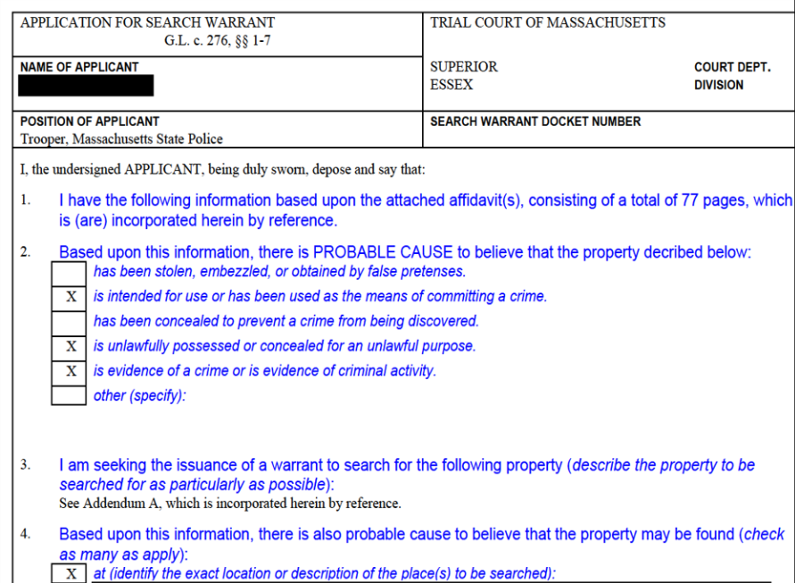
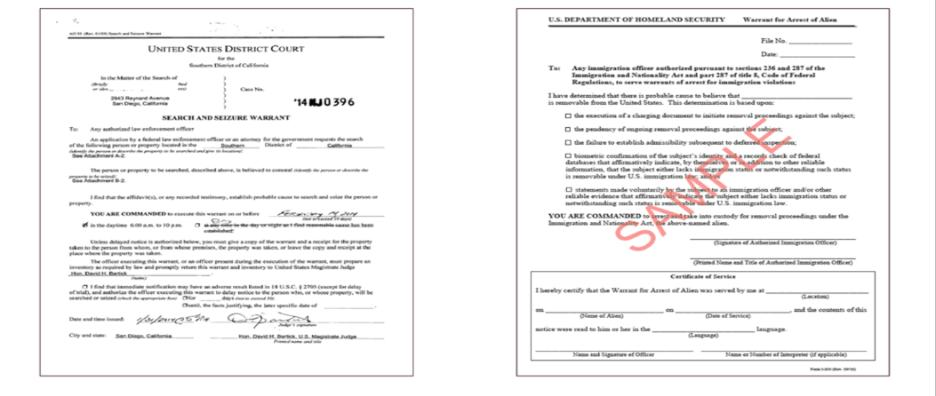

A new state law limits when people can be arrested for immigration reasons in some places, and adds protections for families and people in detention. Some parts are already in effect. More start Nov. 3 (page 2).
Check the signature line. Real samples on page 4. Staff can ask to see the paper. Don’t physically block anyone. Call a lawyer or LUCE.
LUCE hotline: 617-370-5023 · to report ICE activity you see
Police/courts breaking rules: AG complaint (link on page 3)
Questions? Ask me:
Marlie · 770-378-9207
mcreed@mlri.org · mcreed@ebhcs.org
Scan a code with a phone camera to open the page. You can share these with students.
Start here. Explainers in English, Spanish, Haitian Creole, Portuguese. Links to the AG complaint process.
miracoalition.org/resources/the-protect-act-8-5-2026Directory of immigration lawyers and legal aid groups in Massachusetts.
miracoalition.org/resources/legal-servicesWhat to do if ICE comes to your home, work, or car.
miracoalition.org/resources/know-your-rightsFull state guide. Its Appendix A (page 12) is page 4 of this handout.
mass.gov/doc/protect-act-guidance-and-model-policy-for-covered-health-care-providersFamily plan packets in 7 languages, caregiver form tools, help for detained parents.
miracoalition.org/family-preparednessIncludes form MPC 142 to name a standby guardian.
mass.gov/lists/probate-and-family-court-forms-for-guardianship-and-conservatorshipFull text of the PROTECT Act.
malegislature.gov/Laws/SessionLaws/Acts/2026/Chapter163The state’s official explanation of the law.
mass.gov/info-details/the-protect-actRules for ICE in Massachusetts courthouses.
mass.gov/policy-statement/massachusetts-trial-court-policy-on-interactions-with-united-states-immigration-and-customs-enforcementFrom the state’s PROTECT Act guidance. Look at the top (who issued it) and the signature line (who signed it).

Top right says “Trial Court of Massachusetts.” A judge or magistrate signs it.
